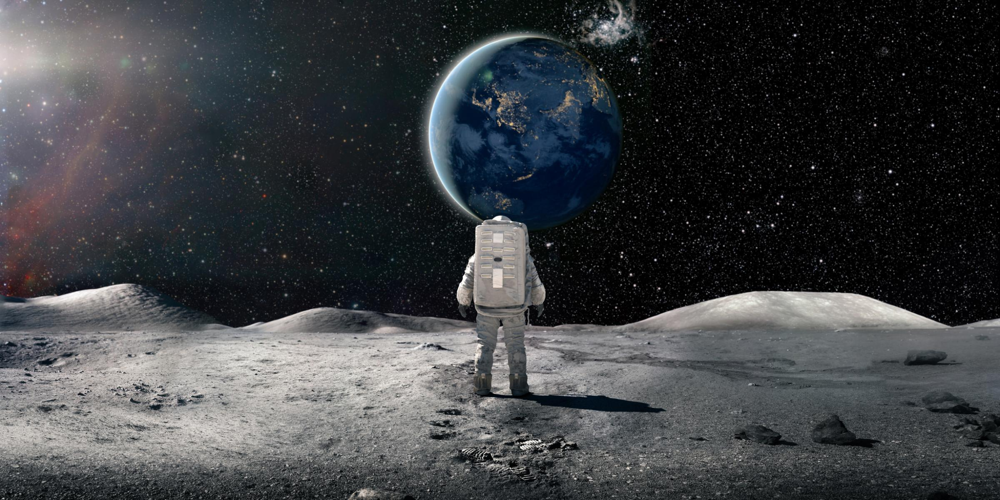
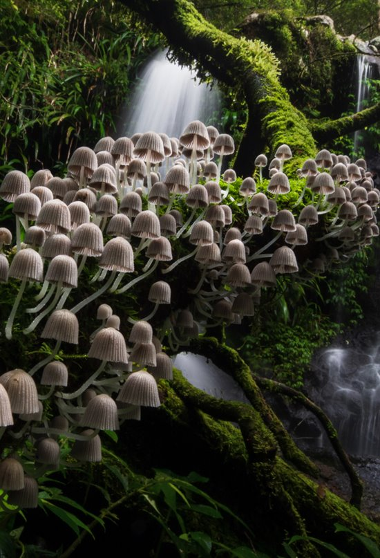
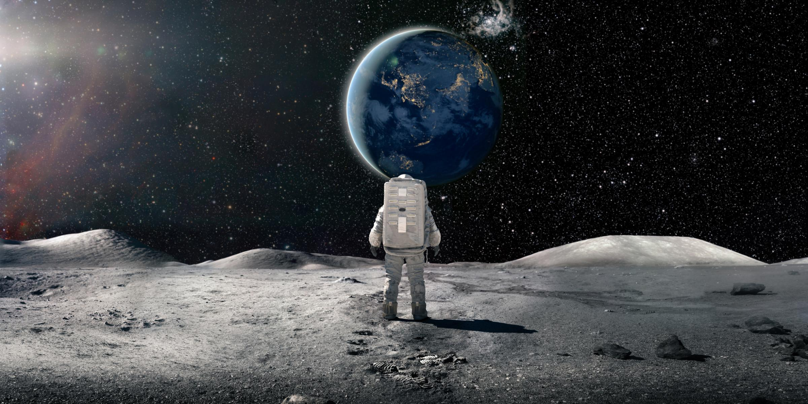
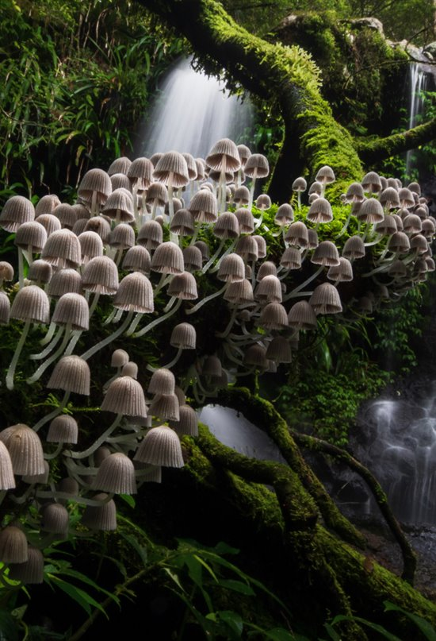

Tour de compras en Sevetta
El planeta Sevetta , ubicado en la zona de libre comercio intergaláctico lo convirtió en un planeta meramente comercial, en donde encontrara productos inaccesibles para el planeta Tierra a precios muy bajos. El tour tiene una duración de 5 dias (2 de viaje y 3 de tour) , visitaremos los 3 continentes que conforman a Sevetta cada uno comercializa distintos tipos de productos. Al ser uno de los planetas mas peligrosos de toda la galaxia se le brindara los siguientes servicios: + Contara con protección y seguridad las 46 hs diarias de Sevetta. + Le brindaremos un seguro antirrobo . + Obtendrá un seguro de vida. Valor: $70.000.000
Alone in the dark
Visite el lado oscuro de la luna terrestre, disfrute de un viaje completamente solitario y viva una experiencia en donde el silencio y la oscuridad serán protagonistas. Realice caminatas lunares y disfrute de unos paisajes excepcionales. ¿Te animas? + Viajaras en una nave completamente solo y autocomandada. + Pasaras 7 (siete) días en una cabaña lunar completamente equipada. + Durante la estadía, no tendrás comunicación alguna con ninguna persona física , serás asistido por Carol un sistema de IA de voz de última generación, que podrá guiarte en todas tus inquietudes. + Serás monitoreado las 24hs y ante cualquier eventualidad tendrás asistencia de parte de nuestro personal. Valor: $100.000.000
Bosques de Naguru
Aprende a sobrevivir en los peligrosos Bosques de Naguru principal destino del planeta Zivok. Durante esta excursión de 5 dias, siga a su guía experto de aventuras en una caminata por el bosque y aprenda cómo podría usar su entorno natural para sobrevivir en la naturaleza. Identifique y disfrute las nueces de Naguru, las frutas de la vitalidad y las bayas del microsueño, que son comestibles, así como de qué plantas venenosas deben mantenerse alejado. Practica la construcción de trampas para animales del bosque y aprende a potabilizar el agua del famoso Rio Rhum + Aventura de habilidades de supervivencia guiada en los Bosques de Naguru. + Aprende técnicas reales de supervivencia mientras exploras el Bosque con tu guía nativo experto. + Descubra cómo identificar qué plantas, frutas y nueces puedes comer y cuáles evitar. + Descubra cómo localizar fuentes de agua y potabilizar las mismas y aprenda cómo construir trampas para atrapar animales pequeños + Disfrute de un relajante paseo en canoa y experimente la vida de los Zivokens (pueblo local) Valor: $150.000.000